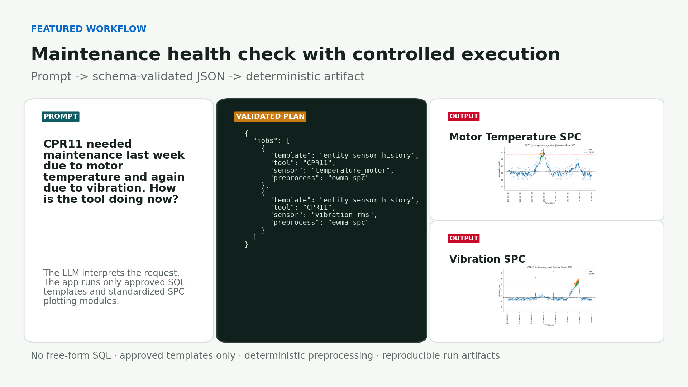
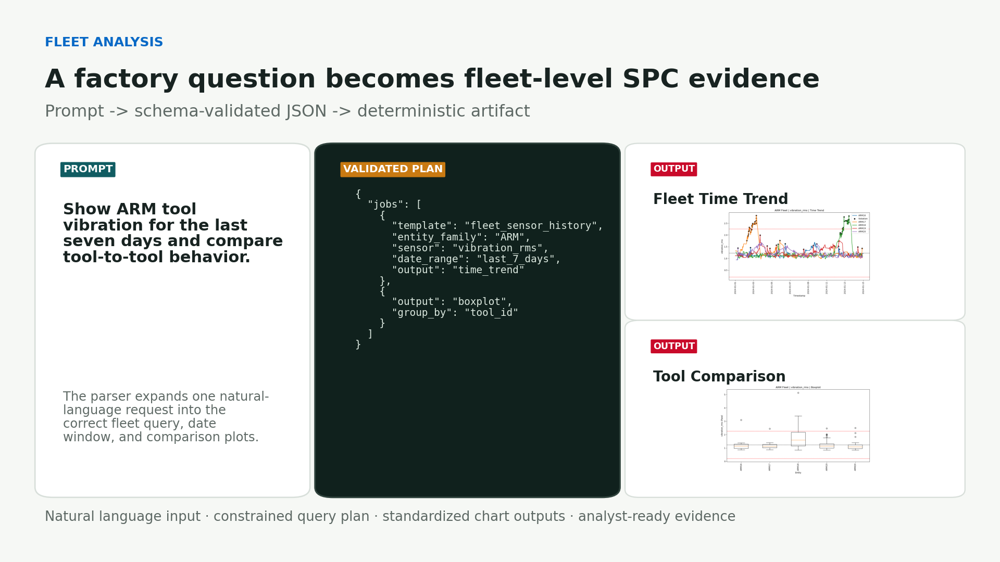
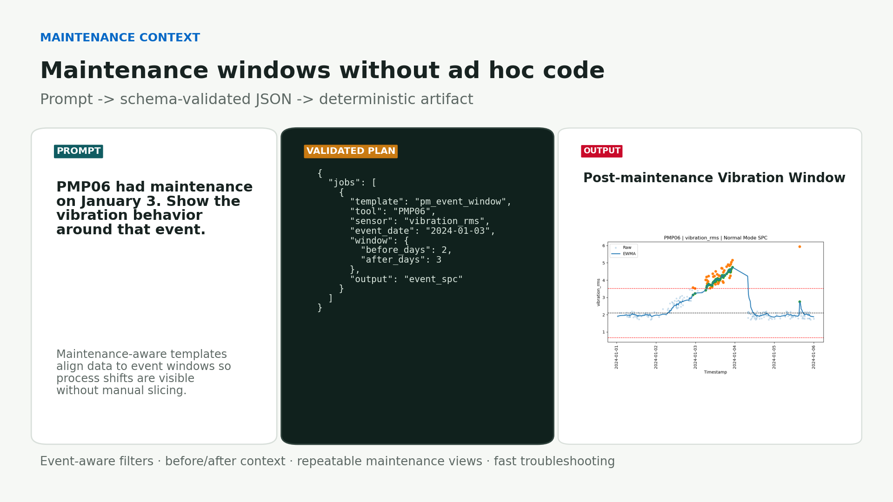
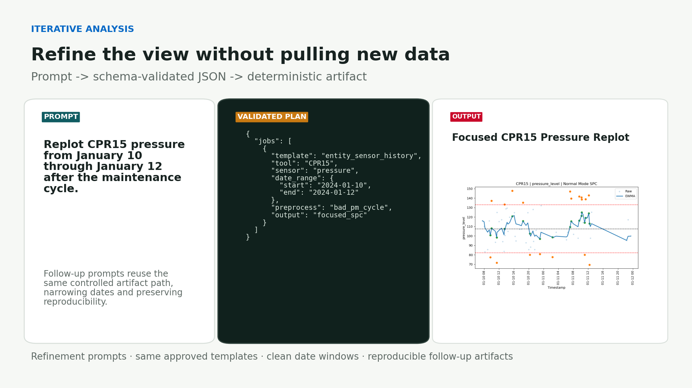
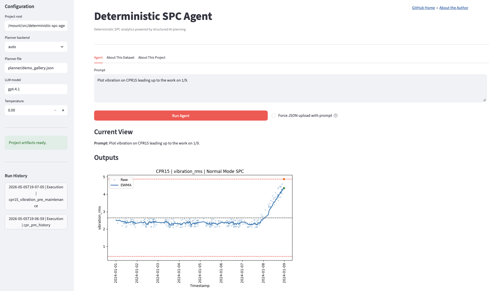

A guardrailed, reproducible manufacturing analytics framework that applies LLM-driven planning without allowing AI to generate SQL or analysis code. The LLM produces a structured JSON plan, which is validated and executed through approved SQL templates, deterministic SPC preprocessing, and standardized visualization modules.